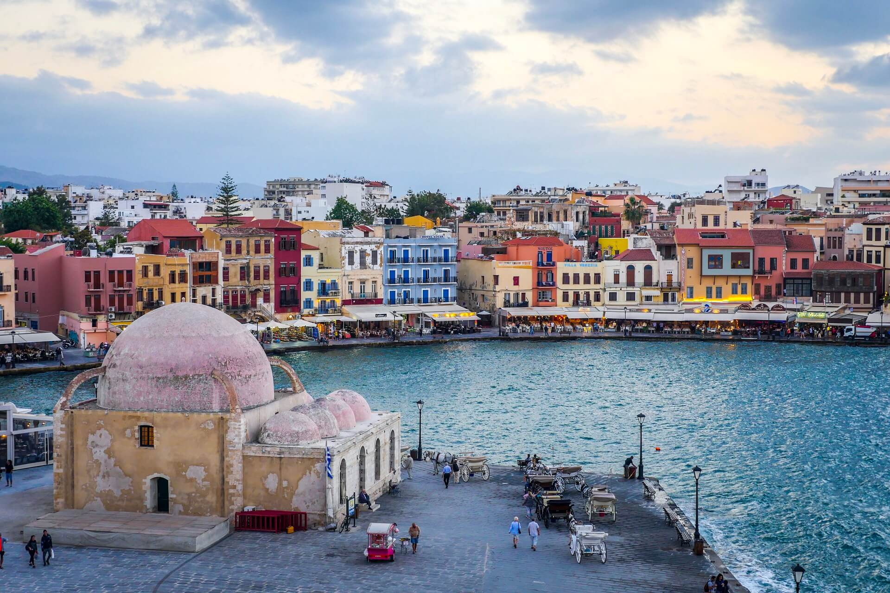
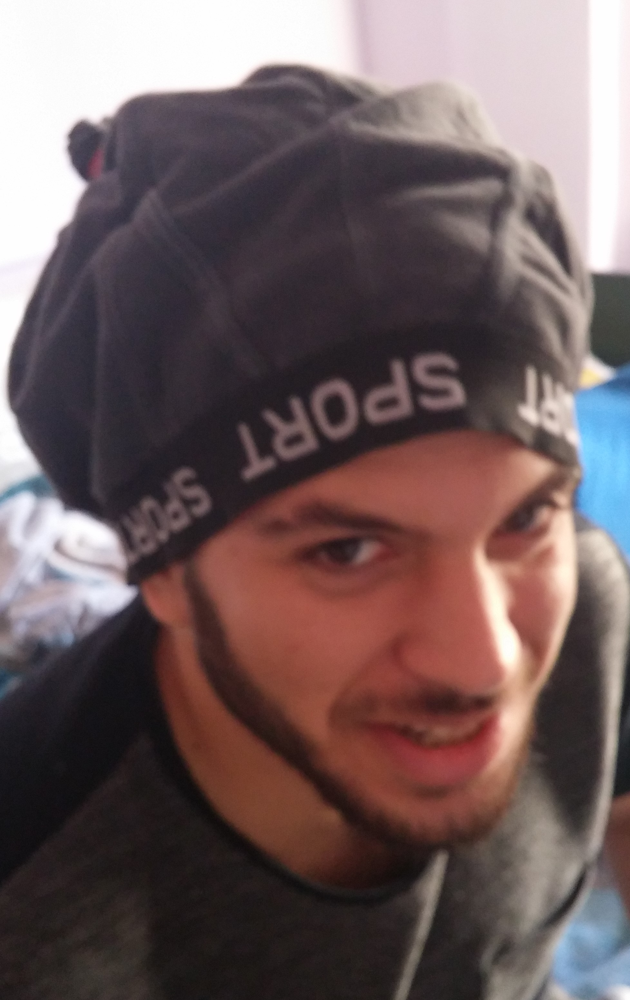

Αεμ: 4213 Οι γνώσεις μου στον προγραμματισμό ειναι βασικές. Οι γλώσσες που εχω δει ειναι C++, Java, Python, HTML & CSS, και MySQL. Ο τόπος καταγωγής μου ειναι η Πτολεμαΐδα. Στην παρακάτω φωτογραφία θα βρείτε και ένα άρθρο για την πόλη μου.

Ονομάζομαι Χρυσοβαλάντης Χριστόφορος Χριστοφοράκης, κατάγομαι απο τα Χανιά της Κρήτης και είμαι φοιτητής στο τμήμα Μηχανικών Πληροφορικής του ΤΕΙ ΑΜΘ. Οι γλώσσες προγραμματισμού με τις οποίες εχω ασχωληθεί-ασχολούμε είναι η C, C++, Python, SQL, Html, CSS και Java.
  ΤΟ ΒΙΟΓΡΑΦΙΚΟ ΜΟΥ ΕπικοινωνίαΣτον παρακάτω σύνδεσμο θα βρειτε και το μελλοντικό μας σαν εταιρία.